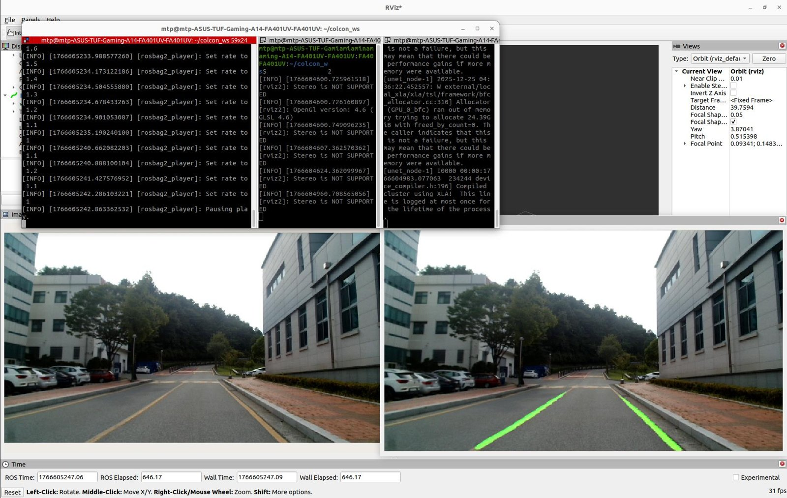
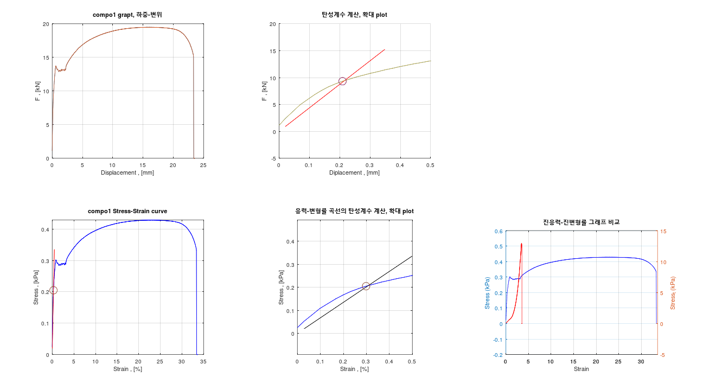
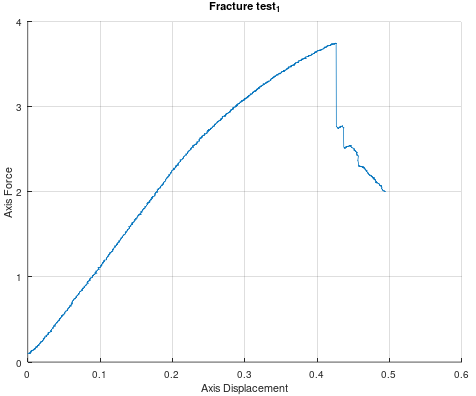
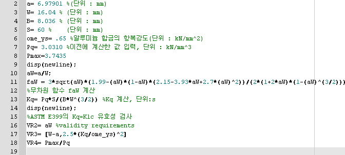
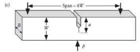
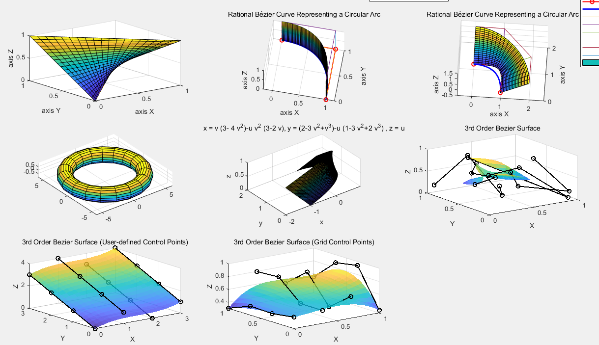

Last modified
주요 과목
종합설계 졸업 프로젝트
- Arduino
- 열화상 센서
- 차동 제어
- 설계보고서
- 캡스톤디자인
3인 팀 졸업 프로젝트에서 마이크로프로세서응용 등 전공 과목에서 배운 제어 지식을 바탕으로, Arduino를 활용해 익수자에게 스스로 다가가는 무인 열감지 구명보트를 만들었습니다.
열화상 센서 처리와 코드 통합, 좌우 모터 차동 제어와 회로 구성은 팀원들과 함께했고, 저는 설계보고서 작성을 맡았습니다. 기획부터 부품 구매, 제작, 테스트, 발표까지 전체 개발 주기를 거치며 하드웨어와 제어 회로를 통합하는 과정을 익혔습니다.
재료및역학실험 24-2학기
- Octave
- Matlab
- ASTM
- 재료역학
- 원시 데이터
- 물성 계산
재료역학 이론을 바탕으로 인장·굽힘·파괴인성·경도·피로 시험의 원시 데이터를 Octave와 Matlab 스크립트로 직접 처리하고 재료 물성을 도출했습니다.
국제 시험 규격(ASTM)을 기준으로 시험 조건과 결과의 유효성을 판정했습니다. 조건을 충족하지 못한 시험 결과도 버리지 않고 발생 원인과 한계를 보고서에 기록하며 데이터 검증 태도를 익혔습니다.
25-2학기
인공지능 데이터·AI
- Python
- scikit-learn
- Roboflow
- Colab
- ROS 2
- 차선 인식
- 데이터 기반 모델
기계학습과 인공지능 기초 이론을 배워 Python과 scikit-learn으로 회귀·분류 실습을 수행했고, 기말 개인 발표에서는 수업 과제로 교내에서 수집한 주행 데이터로 Colab과 Roboflow를 활용해 차선 인식 모델 3종을 비교했습니다.
학습된 모델을 ROS 2 환경에서 카메라 영상 추론 노드로 구동하며 모델 구조별 검출 결과를 대조했습니다. 공학 문제를 물리 모델과 데이터 기반 모델 두 관점에서 바라보며, 데이터 수집부터 라벨링·학습·평가까지 이어지는 머신러닝 개발 흐름을 익혔습니다.


주행 데이터를 모은 대회 프로젝트(ERP42) 보기 →
계측공학 계측·제어
- LabVIEW
- 웨이브폼 차트
- 변형률
- 응력
- 센서
- Simulink
계측 시스템과 센서 동작 원리를 배우고, LabVIEW를 활용해 스위치 상태에 따라 상수와 난수를 선택하여 웨이브폼 차트에 한 점씩 그리는 연습 VI를 만들었습니다.
3인 조 발표에서는 변형률과 응력 계측 파트를 맡아 재료역학 이론을 계측의 목적과 연결해 발표했습니다. Simulink와 계측 이론을 학습하며 물리량을 전기적 신호로 변환하고 계측 데이터를 시각화하는 기초 원리를 익혔습니다.
25-1학기
기계재료학 재료·역학
- S50C
- JIS
- ASTM
- 물성표
- 열처리
- 금속재료
재료 구조와 상평형도, 열처리 원리를 배우고, JIS·ASTM 규격과 물성표를 활용해 S50C 탄소강 분석 리포트를 작성했습니다.
졸업 프로젝트에서 직접 가공했던 S50C 소재를 대상으로 성분과 열처리에 따른 기계적 특성, 가공성과 비용 효율성을 정리했습니다. 나아가 낮은 내식성과 용접 한계까지 조사하며, 단순 강도뿐 아니라 가공성과 경제성, 부식·접합 조건을 종합해 재료를 선정하는 기준을 익혔습니다.
냉동공조 열·공조
- 열역학
- 유체역학
- 공기조화
- 냉동 사이클
- 클린룸
열역학과 유체역학 이론을 바탕으로 냉동 사이클과 공기조화 원리를 배우고, 공조냉동 과제 4개를 제출했습니다.
실생활의 에어컨 작동 원리와 클린룸 등 산업 공조 환경에 적용되는 냉동·공조 원리를 학습했습니다. 열과 유체의 에너지 전달 과정을 시스템 관점에서 해석하는 기본 개념을 익혔습니다.
생산품질공학 생산·품질
- 관리도
- PDCA
- 제조공정
- 통계 기초
- 가설검정
- 품질 활동
제조공정과 생산 시스템 이론을 바탕으로 공정 관리 통계와 품질 철학을 배우고, 슈하트 관리도와 데밍의 PDCA 순환 개념을 정리했습니다.
가설검정과 관리도 등 통계적 기법을 통해 생산 공정의 산포를 감시하고 이상 원인을 관리하는 체계를 학습했습니다. 제조 현장에서 발생하는 품질 변동을 데이터와 표준화 관점에서 지속적으로 개선해 나가는 관리 역량의 중요성을 익혔습니다.
24-2학기
재료및역학실험 재료·역학
- Octave
- Matlab
- ASTM E399
- 파괴인성
- S-N 선도
- 마이크로 비커스
- 재료역학
재료역학 이론(응력·변형률·굽힘·파괴·피로)을 배우고, Octave와 Matlab 스크립트를 활용해 시험기 원시 데이터(.dat)에서 물성을 계산하고 선도를 도출해 시험별 개인 보고서를 작성했습니다.
인장·굽힘·파괴인성·경도·피로 5종 시험을 수행하며, 파괴인성 시험에서는 ASTM E399 규격의 유효성 검사 코드를 작성해 조건 미충족을 직접 판정했습니다. 규격에 맞지 않거나 예상과 다른 시험 결과도 버리지 않고 원인과 한계를 분석해 보고서에 남기며, 실험 데이터를 객관적으로 검증하는 엔지니어의 태도를 익혔습니다.







시험 데이터·코드와 보고서에 실은 규격 그림






CAD응용 설계·형상
- Octave
- 동차좌표
- 로드리게스 회전 공식
- 베지어 곡선
- 베지어 곡면
- SolidWorks
CAD 프로그램이 쓰는 형상 모델링 수학을 배우고, Octave 스크립트로 기하 변환과 곡선·곡면 생성 알고리즘을 직접 코드로 구현했습니다.
동차좌표와 로드리게스 회전 공식으로 도형을 변환해 탄소나노튜브 구조를 출력하고, 조정점과 가중치를 다루는 유리 베지어 곡선과 베지어 곡면을 시각화했습니다. 좌표계 변환과 매개변수 곡면이 생성되는 수학적 원리를 코드로 확인하며, 평소 쓰던 SolidWorks의 기능이 어떤 원리로 돌아가는지 생각해 봤습니다.


자동차공학 설계·형상
- 엔진
- 변속기
- 동력 전달
- 차체
- 기계요소
- 제원
자동차를 구성하는 핵심 기계요소의 작동 원리와 동력 전달 이론을 배우고, 차량 1종의 차체·엔진·변속기·성능 제원을 조사해 정리했습니다.
엔진의 출력 발생 과정과 자동변속기 등 동력 전달 메커니즘이 실제 차량에서 구현되는 방식을 학습했습니다. 개별 기계요소들이 유기적으로 결합되어 완성차의 주행 성능을 구성하는 전체 시스템적 연계성을 익혔습니다.
24-1학기
마이크로프로세서응용 계측·제어
- Arduino
- PWM
- 스텝모터
- 엔코더
- ADC 변환
- 폐루프 제어
- 라인트레이서
마이크로프로세서 제어 원리를 배우고, 2인 팀 과제에서 강의 예제 코드를 응용·수정하는 소스코드 작성과 보고서를 맡아 Arduino 기반의 다양한 제어 장치를 구현했습니다.
가속도 센서의 아날로그 값을 ADC 변환해 충격 방향을 LED로 표시하는 장치, 스텝모터로 한 면이 계속 위를 향하게 하는 각도 유지 장치, 적외선 센서 기반 라인트레이서의 코드를 작성했습니다. PWM 모터 구동 신호와 엔코더 피드백을 활용한 폐루프 제어 예제를 다루며, 센서 신호를 받아 구동기를 제어하는 임베디드 제어 기초를 익혔습니다.

23-2학기
기계공작실습 제조·생산 · 앞 학기(23-1)에 배운 기계공작법·기계재료학과 연계
- 밀링
- 선반
- 아크 용접
- 도면
- 공차
- 공정 순서
- 절삭유
기계공작법과 재료 이론을 바탕으로 2인 조 실습에 참여해, 도면을 해석하고 공정 순서를 설계하여 밀링·선반·아크 용접 장비로 금속 공작물을 직접 가공했습니다.
단면 절삭과 나사 가공, 백래시를 고려한 치수 공차 관리, 용입 상태에 따른 용접 전류 조절을 수행하고 주차별 실습 보고서를 작성했습니다. 측정기구 영점 설정과 절삭유 관리, 안전 절차를 지키며 도면의 형상과 공차에 맞춰 가공하는 현장 습관을 익혔습니다.